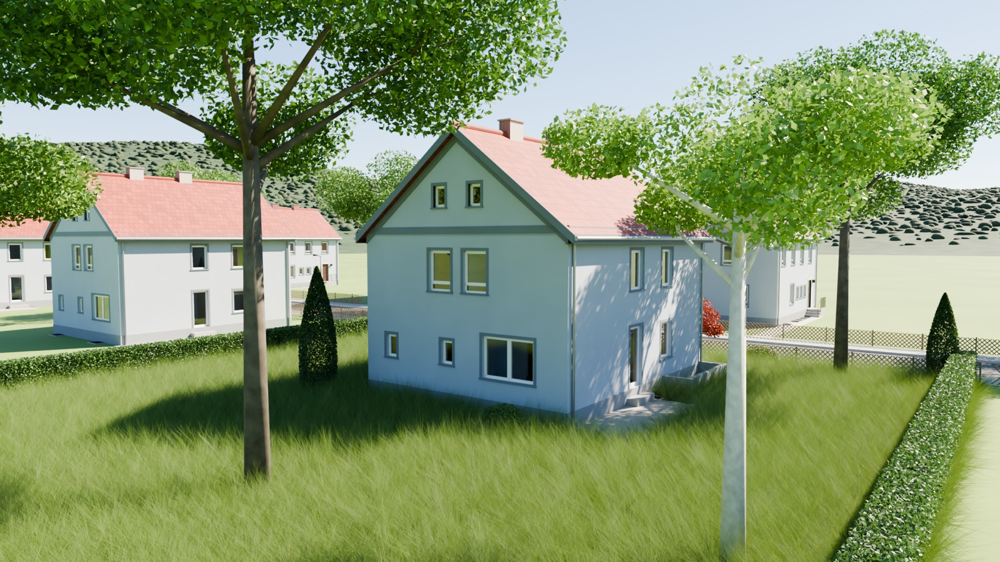

3D-Modell · Version 0.9
Hausmodell
Ein Einfamilienhaus aus der Zeit um 1950, in Blender nachgebaut. Dazu gibt es Druckdaten für ein stapelbares Modell: Dach und Obergeschoss lassen sich abheben.

3D-Druck
Das Modell besteht aus drei Teilen – Erdgeschoss, Obergeschoss und Dach –, die mit Stiften übereinander gesteckt werden.
- 1:60Maßstab
- 3 Teileca. 19 cm hoch
- ca. 27,5 hDruckzeit
- ca. 820 gPLA
Die Projektdatei für Bambu Studio enthält alle drei Teile auf je einer Druckplatte, eingestellt für den Bambu Lab P1S und fertig gesliced.
Haus_M1-60_P1S_Projekt.3mf · 24 MB · Druckanleitung (PDF)
Blender-Dateien
Die Blender-Dateien liegen im Release auf GitHub: das Haus mit Umgebung, ohne Umgebung sowie Erdgeschoss und Obergeschoss einzeln. Sie wurden mit Blender 5.2.2 LTS erstellt.
Mehr dazu
Aufbau des Modells, Maße, Farben und Druckeinstellungen stehen in der Dokumentation. Alle Dateien finden sich im Repository auf GitHub.